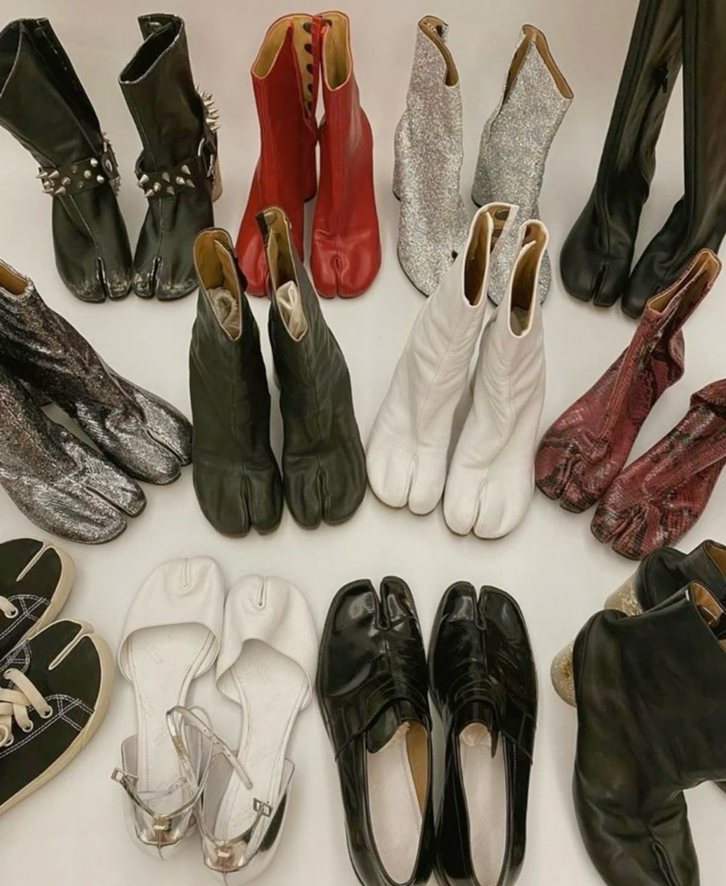

Si pienso en Margiela pienso en misterio, en cara tapada, en las cuatro puntadas[span_6](end_span). [span_7](start_span)Martin Margiela nunca fue una persona que quisiese protagonismo y ese afán por el anonimato, combinado con las obras de arte que creaba, tuvieron el efecto contrario[span_7](end_span). [span_8](start_span)En sus propias palabras dice: “siempre quise que mi nombre estuviese unido a mi producto, no a mi cara”[span_8](end_span).
[span_9](start_span)Después de la etapa de los ochenta, con esas figuras extravagantes y de reloj de oro, la primera línea fue de primavera-verano, inspirado en el surrealismo, en esa cara tapada por un velo tan distintiva de la marca[span_9](end_span). [span_10](start_span)Cuando lo probó en una modelo le encantó porque sus ojos solo se fijaban en la ropa que llevaban[span_10](end_span).
[span_11](start_span)Para Martin, los hombros y los zapatos eran la clave del outfit; lo demás es relleno[span_11](end_span). [span_12](start_span)Los zapatos te otorgan movimiento y los hombros te dan actitud, de ahí salen dos de las claves de Margiela[span_12](end_span). [span_13](start_span)Los zapatos Tabi, esos que ves a todas las influencers a día de hoy y que los amas o los odias; aunque probablemente si Carrie Bradshaw los hubiese llevado antes, estoy segura que hubiesen dado el boom hace tiempo[span_13](end_span).

The Iconic Tabi CollectionOriginalmente fueron creados para coleccionistas, pero a día de hoy se han hecho tan virales que todo el mundo los tiene, por eso Margiela ha creado recientemente una línea de zapatos Tabi en la cual lanzarán un modelo al año y muy limitado[span_14](end_span).
[span_15](start_span)La Maison fue fundada en agosto de 1987 por Martin Margiela y Jenny Meirens[span_15](end_span). [span_16](start_span)Margiela quería crear un universo y ese universo se desarrollaría alrededor del color blanco[span_16](end_span). [span_17](start_span)Después de tanto negro y gris, en Margiela todo estaba pintado de blanco o cubierto por algodón blanco[span_17](end_span).
[span_18](start_span)Margiela estaba cansado de que la gente entrase a una tienda y dijese “anda mira, este abrigo es Dior” o “ese bolso es Chanel”[span_18](end_span). [span_19](start_span)Él no quería nada de eso para su marca y ahí nació la icónica etiqueta blanca con cuatro puntadas[span_19](end_span).
[span_20](start_span)Durante muchos años la gente se acercaba a las personas que llevaban la ropa de Martin para avisarles de que tenían algo en la espalda y para ellos era en plan “no, es parte de la marca, es Martin Margiela”[span_20](end_span).
.png) Las cuatro puntadas blancas
Las cuatro puntadas blancas
Su primer desfile fue en el teatro Café de la Gare; cuando le preguntaron al dueño si podían usar el espacio, él le contestó: “si lo hacéis aquí, seréis famosos”[span_21](end_span). [span_22](start_span)El desfile se celebró en 1988 para la colección primavera-verano del 89. Antes de salir en el desfile, las modelos debían de pisar pintura roja para dejar huella en la pasarela[span_22](end_span).
[span_23](start_span)Pero Margiela se llevó su show de la colección primavera-verano del 90 a un barrio marginal de París donde te podías encontrar a las personas más importantes en el front row o a gente del barrio[span_23](end_span). [span_24](start_span)Era como si Andy Warhol hubiese diseñado una pasarela en medio de un descampado; todo lo que hacía era diferente y con su esencia[span_24](end_span).
[span_25](start_span)El show fue un caos total en el mejor sentido: gritos, niños en la pasarela… Martin lo clasifica como “el show más mágico de su carrera”[span_25](end_span).
.png) Desfile Primavera-Verano 1990
Desfile Primavera-Verano 1990
Me resulta fascinante cómo cogía objetos y los convertía en moda, como una camiseta de una bolsa de plástico o un plato roto que se convirtió en un top, calcetines militares que evolucionaron en un jersey… Reutilizar telas olvidadas, dañadas[span_26](end_span).
[span_27](start_span)Martin aguantó un poco, pero acabó dejando su Maison en las manos de John Galliano[span_27](end_span). [span_28](start_span)[span_29](start_span)Muchos de los looks de Galliano han quedado grabados en nuestras mentes, ¿pero el look de Rihanna con Margiela en la Met Gala de 2018?[span_28](end_span)[span_29](end_span).
.png) Rihanna en la MET Gala 2018
Rihanna en la MET Gala 2018
Después de Galliano entró Ackermann en 2024 con un estilo refinado y estructural, nada que ver con su antecesor; y después en 2025 entró Glenn Martens, que es el actual director creativo y tiene un estilo experimental, deconstructivista…[span_30](end_span).